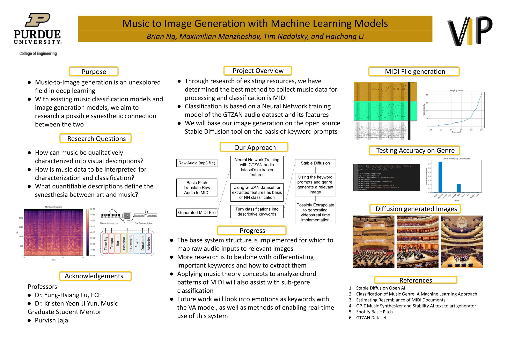

Haichang Li
"Fake it till you make it"
Haichang(Charles) Li
Junior @Purdue University
li4560[at]purdue[dot]edu
LinkedIn
HelloWorld...
I am Haichang(Charles) Li(李海畅), currently a second-year Undergraduate student at Purdue University, majoring in Computer and IT, and minoring in Communication. Before coming to Purdue University, I dropped out of the EEE joint program of XJTLU and UoL for personal planning, so I also have learned some hardware knowledge in the Year-1 @XJTLU.
My current research interests mainly focus on the perception and interaction between various modes of machines, especially in the fields of audio and speech.I expect to be the Class of 2024.5(Or 2025) and look forward to continuing my study for degree in the 2025 Fall. So I expect to have half a year to a year of gap, and I am looking for a lab that will accept me as a long-term undergraduate researcher. My job will run from the summer of 2023 to the summer of 2025, which will give me plenty of time to catch up on my background. Although I learned the basics on my own, fortunately -- starting in the fall of 2023, I will be taking ML/HCI/Robo courses, and the key course in the fall of 2024 will include advanced software development /NLP.
Self-evaluated Skills
If theIdealStateIWantToAchieve = 100%, then :
Exploration ability
Executive ability
Thought transfer ability
Other personal information
is my hometown
......
My Educational Experience
I thank these institutions for providing me with a learning environment that makes me a diverse thinker. I also want to thank @BYU, @UCB, @ZJU, @PKU, @ECNU and others for their short term/MOOC courses or the provided opportunities to work and learn.

Purdue University West Lafayette, US
B.Sc in Computer&IT and minoring in Communication
Current academic standing: 3.96/4.0 GPA (Class of 2024)

Xi'an Jiaotong-Liverpool University Suzhou, P.R.China
Non-degree Year-1 experience in Electronic Science and Technology field
Final academic standing: The equivalent First-Class Honour

University of Liverpool Liverpool, UK
Dual non-degree experience with XJTLU in Dept. EEE
My Past Works
- Startup team of TeamTop3 Co., Ltd
-
As an internship opportunity for machine learning engineer and product Manager, detailed content and results will be updated after completion. Due to the confidentiality agreement, I can't explain the specific products and ideas before the Sept.2023.
In this experience, I used Word2Vec to build a correlation corpus and Bert+CRF/ Bert+BiLSTM+CRF/ BiLSTM+CRF/ Transformer+SoftMax to build an entity recognition model with 0.93 F1 value under special scenarios. Some projects are implemented using StableDiffusion+ControlNet. In addition, I also use Bert/Word2Vec and other models to implement some work, such as text similarity comparison and text parser. At the same time, as a product manager, I independently constructed the AI scheduling platform of our project from 0 to 1, and jointly participated in the architecture process of other industrial products, and finally obtained the first financing of tens of millions of CNY. During this experience, as a core member of the start-up team, I also participated in the planning of commercial layouts and the recruitment of algorithm engineers for the products I designed...
- Music to AI
- Stable Diffusion brings the innovation of text2img, but we find that there is still no mature technology to implement audio2img or even audio2video. So we think you can turn to the realization of audio audio2video, the project by the four undergraduate students of Purdue university, will use MusicBert BasicBitch/Stable coursing together model, etc. At the same time, we are considering incorporating text generation models such as GPT to automate this transformation.
-

- Human thermal comfort model
- When the researchers to do the human thermal comfort data collection during the body movement in the experiment. However, the data collection method is incomplete in terms of the current investigation of human thermal comfort associated with exercise. Moreover, the predicted mean vote (PMV) model, is restricted in terms of the accurate prediction of dynamic change with the thermal environment, such as that finite experiment when dealing with the body movement situation. This project is focus on the method of data collection, information post-analysis of body movement on human thermal comfort.
-

Awards and Services
留给自己的话
人生海海，山山而川。辗转漂泊，似前路未定，但向前而心安。顺风顺水至二八，起起伏伏于舞象。少年心胆雄，青衫薄，倚斜桥。不知世事艰，自诩真俊杰。
后屡屡失意，获倒数第一，辗转多地多校，探索数次专业而不得，甚至差点投身军旅。幸得众前辈指导与亲朋陪伴，渐悟人类生而存心智高低，但未至瓶颈时后天努力足以胜天。
后得学习之所求与奥妙，茫茫求索终于上路。同以往一般四方探寻而不再迷茫，不拘泥于绩点，而凭所需与所好。思索良久，后退学而重申，众议而心明。
遂至年少时所向之学府，明所好与所愿之方向。寻寻觅觅又回起点，整装重发。仍然迷茫，但已知一路向前足矣。时而回首，一路遗憾颇多，
但所幸每个遗憾已是曾经视角下的局部最优解。
众人有分，如今不愿比人，只比己身。于探索途中曾路遇状元或同岁博士等等，已然明白自己不是天才，却也无忧无虑，只是时而自虑未达己身规划。大宇宙盛世绚丽，小宇宙内同样也有独特的精彩。山鸟与鱼不同路，
但山路水路之终点未必不同。
曾为遇低谷而忧，但也因坚定前进而喜。穷则独善其身，达则兼济天下。现于纷繁中探索，未曾执着定要改变世界。只愿有天能在混沌边界扎出一个小孔，找到一束光便是幸运。
人类之路漫漫，他日若有能力则改变世界，若否，做抱薪开路者又何妨？
"Now when I look back to that period of suspension, I’d say it’s a blessing in disguise. I was allowed to take a break from my intensive and maybe aimless life,
where I was too afraid of getting left behind on the way down the path, never really knowing where it was leading me. When I stopped rushing,
I got to see better whether it is the path that I want to go down. And I learned to always spare some time to introspect. Knowing where my true passion rests and where it should lead me,
I became more steadfast and confident, and no longer stuck with the fear to lose."
Contact Me
West Lafayette, IN, US
Phone: +1 765 694 5954
Email: li4560@purdue.edu

Lets get in touch. Send me a message:
Copyright © Haichang Li 2023